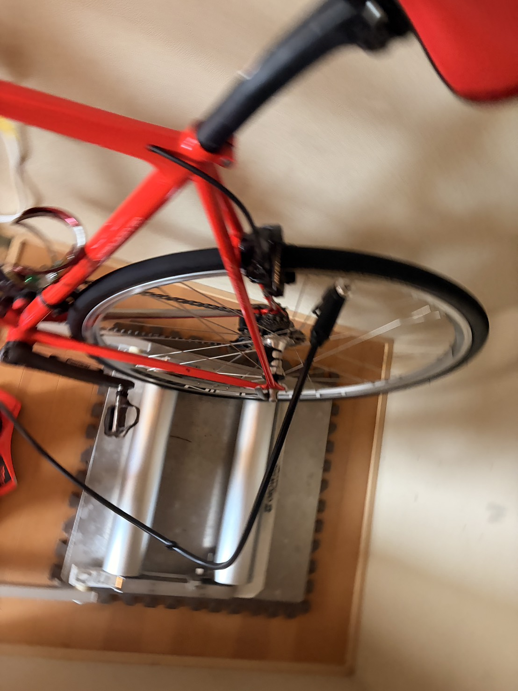
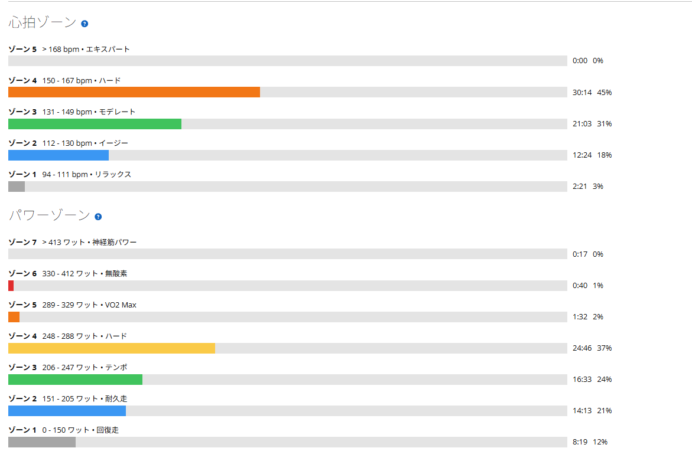

SST20分×2。ローラーで250W台を崩さず踏めた日
今日は天気が悪いので外ではなくローラー。前日は自転車なしで回復に寄せていたので、室内でSSTをやることにした。メニューは20分×2本である。
狙いは出力を盛ることではなく、20分を2本そろえること。そう言いながら、実際には1本目255W、2本目253W。控えめに入ったつもりが、SSTとしてはかなり高めのところに着地した。

全部読むのが面倒な人向けまとめ
- SST20分×2を実施。1本目255W、2本目253Wでほぼ同じ出力にそろえられた。
- FTP設定275Wに対して92〜93％ほど。SSTとしては高めだが、今回は崩れず完遂。
- 前回は2本目が15分で終わっていたので、今回はかなりはっきりした進歩。
- 2本目は心拍が上がったが、パワーは落とさず維持できた。
- 高ケイデンスは思った以上に維持できず、後半は87rpm前後に落ち着く時間が長かった。
- 昔よりローラー中のお尻の痛みがまし。高負荷でサドル荷重が少し抜けた可能性がある。
今日の狙いは、20分を2本そろえること
ローラーSSTは地味である。画面の数字を見ながら、同じような負荷をずっと踏む。外ライドみたいに景色が変わるわけでもないし、登り切った達成感が毎分やってくるわけでもない。地味。だが、この地味さがたぶん必要である。
今日の狙いは、20分×2をきれいに終えることだった。推奨強度としては245〜250W中心くらいを考えていたが、実際に始めたら少し高めで安定した。ローラー上の私は、たまに話を聞かない。
1本目255W、2本目253W
結果はかなりきれいだった。1本目は20分で平均255W、NP254W。2本目も20分で平均253W、NP254W。平均パワーは2W差、NPは同じ。こういう数字を見ると、少しだけ練習がうまくなってきた感じがする。
- 1本目20分 / 255W / NP254W / 平均心拍149bpm
- レスト6分半 / 約146W / 平均心拍135bpm
- 2本目20分 / 253W / NP254W / 平均心拍155bpm
FTP設定275Wで見ると、253〜255Wはだいたい92〜93％。SSTとしては高めで、テンポ寄りというよりしっかりSST上限寄り。数字だけ見ると「それ、淡々と言うにはまあまあしんどいやつでは」となる。
高ケイデンスは思ったより維持できなかった
ただし、出力がそろった一方で、ケイデンスは思ったよりきれいには維持できなかった。1本目は最初の10分くらいを91〜95rpmで回せたが、その後は87rpm前後で8分、最後の2分は81rpm前後まで落ちて終了した。
2本目はさらに分かりやすい。最初の4分は91〜95rpmで入ったものの、そこから4分ほど87rpm前後に落ちた。途中で3分ほど91〜95rpmに戻したが、最後までは持たず、終盤はまた87rpm前後で踏み切った。
パワーだけ見ればかなりきれいにそろっている。でも中身を見ると、高ケイデンスで軽く回し続けたというより、途中から少し重めに踏んで帳尻を合わせた感じがある。これは次回の課題である。数字は整っているのに、脚の中ではわりと会議が荒れていた。
前回15分で終わった2本目を、今回は20分まで持っていけた
前にSST20分×2を狙った時は、2本目が15分で終わっていた。あの日も練習としては悪くなかったが、20分×2を完遂したとは言えない。今日はそこをちゃんと超えられた。
しかも今回は、2本目で大きく落ちたわけではない。心拍は上がっている。平均心拍は1本目149bpm、2本目155bpm。室内で気温も27.5℃、推定発汗量も1,070mlなので、体への負担は普通にある。それでもパワーは崩れなかった。
これは富士ヒルに向けてかなり良い材料だと思う。登りでずっと踏み続けるには、短時間でドカンと上げる力だけでなく、一定の負荷を崩さず維持する力がいる。今日はその土台をちゃんと積めた日だった。

お尻の痛みが、昔よりましだった
もう一つ意外だったのが、お尻の痛みである。昔はローラー30分くらいでお尻が痛くなっていた。低〜中強度で座りっぱなしになり、4本ローラーなので大きくポジションを変えにくい。地味に逃げ場がない。
でも今日は以前よりましに感じた。理由としては、負荷が高いぶんサドルにどっかり乗り続けるのではなく、ペダル側にも荷重が逃げていたのかもしれない。脚で体を支える時間が増えると、サドルに乗るだけの状態から少し抜ける。
もちろん、高強度ならお尻に優しいという話ではない。汗も出るし、摩擦も増えるし、長くなれば別の痛みも出る。今日はあくまで「ローラー耐性が少し上がってきた兆候」として見る。Aethos2のMirrorサドル問題とは別枠である。
今回やってみて思ったこと
今日の収穫は、SST20分×2を250W台前半で崩さず完遂できたこと。ローラーで1時間300Wを目指すにはまだ遠いが、そこへ向かう土台練としてはかなり良い内容だったと思う。
前回2本目15分で終わったところから、今回は20分まで持っていけた。しかも1本目と2本目の出力差がほぼない。こういう進歩は派手ではないが、かなり信用できる。
次に試したいのは、同じ20分×2をもう少し余裕を持って終えること。253〜255Wで完遂できたのは良いが、毎回これをやると疲労が重くなりそうでもある。強くなる練習と、続けられる練習。その間をうろうろしながら、今日も一応前に進んだことにする。
自分用メモ
- メニューSST20分×2
- FTP設定275W
- 1本目 / 2本目20分255W / 20分253W
- NP / IF / TSS236W / 0.860 / 81.3
- 平均 / 最大心拍143bpm / 163bpm
- ケイデンス高ケイデンス維持に課題